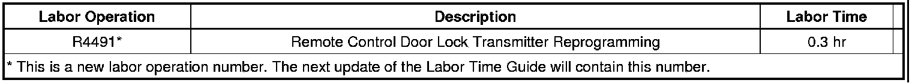

Keyless Entry - Intermittent/Inoperative Remote
TECHNICALBulletin No.: 08-08-52-001G
Date: August 24, 2010
Subject: EI08028 - Intermittent, Inoperative Remote Keyless Entry (RKE) (Reprogram Key Fobs)
Models:
2008-2011 Buick Enclave
2007-2011 Cadillac Escalade, Escalade ESV, Escalade EXT
2007-2011 Chevrolet Avalanche, Silverado, Suburban, Tahoe
2009-2011 Chevrolet Traverse
2007-2011 GMC Acadia, Sierra, Sierra Denali, Yukon, Yukon XL, Yukon Denali, Yukon Denali XL
2007-2010 Saturn OUTLOOK
Supercede:
This bulletin is being revised to change the labor operation number. Please discard Corporate Bulletin Number 08-08-52-001F (Section 08 - Body and Accessories).
Condition
Some customers may comment that one or more key fobs are inoperative. A number of warranty claims have been submitted that show relearning the key fobs has corrected this concern.
Cause
Based on technician feedback, engineering has determined two possible causes for key fob concerns:
- The fobs may not be programmed when the vehicles leave the plant.
- There may be Issues with the fobs internal components.
Correction
To correct the customer's concern, reprogram the transmitter (key fob). Refer to the procedure for Transmitter Programming found in Service Information. If reprogramming the transmitter is not successful, it will be necessary to replace the transmitter.
Warranty Information

For vehicles repaired under warranty, use the table.

Disclaimer